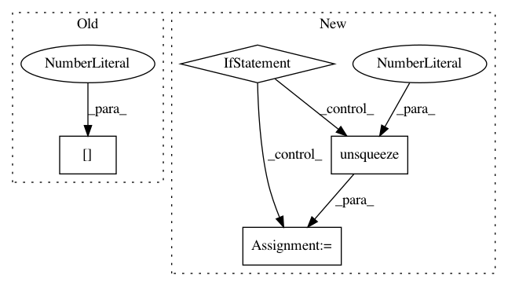

4586366c1018257dd448d62f1fc7534e3f5a4338,enjoy.py,,,#,49
Before Change
cpu_actions = action.data.cpu().numpy()
// Obser reward and next obs
obs, _, done, _ = env.step(cpu_actions[0])
if args.env_name.find("Bullet") > -1:
if torsoId > -1:
After Change
masks.fill_(0.0 if done else 1.0)
if current_obs.dim() == 4:
current_obs *= masks.unsqueeze(2).unsqueeze(2)
else:
current_obs *= masks
update_current_obs(obs)
if args.env_name.find("Bullet") > -1:
if torsoId > -1:
In pattern: SUPERPATTERN
Frequency: 3
Non-data size: 4
Instances
Project Name: ikostrikov/pytorch-a2c-ppo-acktr
Commit Name: 4586366c1018257dd448d62f1fc7534e3f5a4338
Time: 2017-11-23
Author: ikostrikov@gmail.com
File Name: enjoy.py
Class Name:
Method Name:
Project Name: ClementPinard/FlowNetPytorch
Commit Name: c6a079c70368b41873f3288b05b74d38f74b6680
Time: 2018-03-30
Author: clement.pinard@parrot.com
File Name: run_inference.py
Class Name:
Method Name: main
Project Name: PIQuIL/QuCumber
Commit Name: a3645eada1fd6b0dc2f262033a93b81a6ca84b55
Time: 2019-12-23
Author: emerali@users.noreply.github.com
File Name: qucumber/utils/unitaries.py
Class Name:
Method Name: _rotate_basis_state